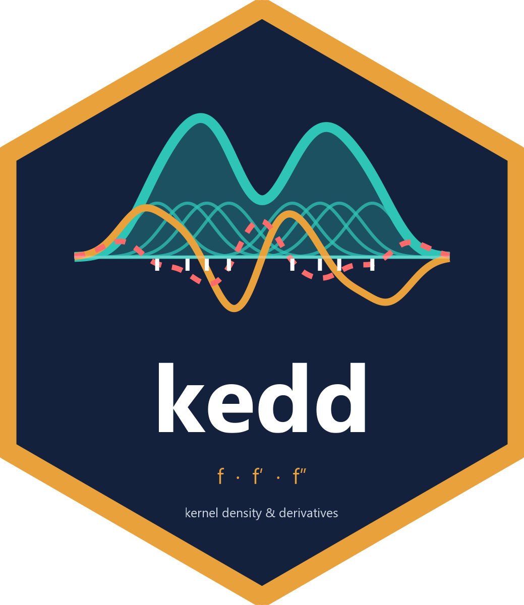

library(kedd)For a sample X1,…,Xn from a density f, the kernel estimator of the r-th derivative is
so hopt ∝ n−1/(2r+5): derivatives need larger bandwidths than the density.
R(g)=∫g2, μk(K)=∫xkK(x)dx.
library(kedd) x <- rnorm(300) bw <- h.ucv(x, deriv.order = 1) # select h bw; plot(bw) # show(), CV curve f1 <- dkde(data = x, h = bw@h, deriv.order = 1) plot(f1) # estimate of f'
Slots are read with @: bw@h, f1@x, f1@y.
dkde(x = NULL, data, h, deriv.order = 0, kernel = "gaussian", nthreads = 0)
x evaluation points (default: 512 points on [min − 3h, max + 3h])h missing ⇒ UCV bandwidth h.ucv(data, r, kernel)x y h kernel deriv.order n data calld <- dkde(data = x, h = 0.5, kernel = "biweight") plot(d, rug = TRUE, band = TRUE, type = "l")
| name | K(x) | supp. | rmax | UCV/MCV/CCV |
|---|---|---|---|---|
gaussian | φ(x) | ℝ | any | any |
epanechnikov | ¾(1−x²) | [−1,1] | 2 | 1 / 0 / – |
uniform | ½ | [−1,1] | 0 | 0 / – / – |
triangular | 1−|x| | [−1,1] | 1 | 0 / – / – |
biweight | 15/16 (1−x²)² | [−1,1] | 4 | 2 / 1 / 0 |
triweight | 35/32 (1−x²)³ | [−1,1] | 6 | 3 / 2 / 1 |
tricube | 70/81 (1−|x|³)³ | [−1,1] | 9 | 3 / 2 / 1 |
cosine | π/4 cos(πx/2) | [−1,1] | any | 1 / 0 / – |
silverman | ½e−|x|/√2sin(|x|/√2+π/4) | ℝ | any | any |
logistic | e−x/(1+e−x)² | ℝ | 20 | 8 / 8 / 8 |
pow(s,t) | cs,t(1−|x|s)t | [−1,1] | min(st,16) | r*/r*−1/r*−2 |
Names can be abbreviated ("epa"). rmax: last non-zero K(r) (kernel.fun, kernel.conv, dkde). UCV (also BCV, TCV, AMISE) / MCV / CCV: highest r with a finite criterion, else NA + warning; SCV: any, MLCV: 0; – = not available; r* = largest integer r < t+½ (2r ≤ st if s, t are integers; r < s+½ unless s is even), at most 6.
kernel.pow(2, 3) # "pow(2,3)" h.ucv(x, kernel = "pow(1.5,2.5)") # s>0, t≥0
pow(s,0) uniformpow(1,1) triangularpow(2,1) Epanechnikovpow(2,2) biweightpow(2,3) triweightpow(3,3) tricube
Exact constants: μk = B((k+1)/s, t+1)/B(1/s, t+1); "pow" alone = "pow(2,2)".
kernel.fun(x = NULL, deriv.order = 0, kernel = "gaussian", n.grid = 512) → K(r)(x)
kf <- kernel.fun(kernel = "biweight", deriv.order = 2) plot(kf, type = "o", zero.line = TRUE)
Default grid: [−8, 8] (Gaussian, Silverman, logistic), [−1.1, 1.1] otherwise.
kernel.conv(x = NULL, deriv.order = 0, kernel = "gaussian", n.grid = 512) → (K(r) ∗ K(r))(x), the building block of the CV criteria.
kc <- kernel.conv(kernel = "logistic", deriv.order = 1) plot(kc) kernel.conv(x = 0, kernel = "logistic", 1)@y # -R(K') = -1/30
At 0: (K(r)∗K(r))(0) = (−1)r R(K(r)). Default grid [−2.1, 2.1] for compact kernels.
Cpp_kernel_constants("biweight", 0) # c mu2 mu4 R # NA 0.1429 0.0476 0.7143 Cpp_kernel_constants("pow(1.5,2.5)", 1) # c, mu2, mu4, R(K')
c = normalising constant of a pow(s,t) kernel (NA for named kernels); R = R(K(r)).
n = 200, Marron & Wand (1992) mixtures: kurtotic #4outlier #5bimodal #7trimodal #9claw #10 h.mcv(claw)
x, deriv.order = 0, kernel = "gaussian",lower, upper, tol, nthreads = 0| function | method | r | kernels |
|---|---|---|---|
| h.amise | AMISE rule (normal reference) | any | all |
| h.ucv | unbiased / least-squares CV | any | all |
| h.bcv | biased CV: whichbcv = 1 (BCV1) or 2 (BCV2) | any | all |
| h.ccv | complete CV | any | all |
| h.mcv | modified CV | any | all |
| h.tcv | trimmed CV | any | all |
| h.scv | smoothed CV, pilot g | any | Gaussian |
| h.mlcv | maximum-likelihood CV | 0 | all |
bw <- h.bcv(x, whichbcv = 2, deriv.order = 1, kernel = "triweight") h.scv(x, g = 0.3) # own pilot h.mlcv(x, kernel = "epanechnikov")
optimize() on [0.01 hos, 2 hos], hos = over-smoothing bandwidth (slot hos)tol default 0.01 * lowerlower/upper ⇒ warning, defaults usedplot(bw), widen lower/upperh.ucv(x, lower = 0.05, upper = 1.5)
Every plot() prints a ggplot and returns it invisibly; customise with main.title, x.title, y.title, colors = list(…), theme = ggplot2::theme_bw(), type = "l" | "p" | "o".
p <- plot(dkde(data = x, h = 0.4)) p + ggplot2::geom_vline(xintercept = 0)
UCV R(K(r))/(nh2r+1) + (−1)r/(n(n−1)h2r+1) ∑i≠j [K(r)∗K(r) − 2K(2r)](u)
BCV1 / BCV2 AMISE with R(f(r+2)) estimated by K(r+2)∗K(r+2) (BCV1) or K(2r+4) (BCV2)
CCV UCV + higher-order bias terms using K(2r+2), K(2r+4), μ2, μ4
MCV UCV with the ½μ2K(2r+2) correction
TCV UCV where pairs with |u| ≤ 1/(nh2r+1) are dropped from the K(2r) term
SCV R(K(r))/(nh2r+1) + (−1)r 2/(n(n−1)) ∑i<j[φ(2r)s1 − 2φ(2r)s2 + φ(2r)s3], s1=√(2(h²+g²)), s2=√(h²+2g²), s3=√2 g; default g = σ̂ · 0.9266 n−2/13
MLCV maximise n−1∑ log f̂−i(Xi)
AMISE h = σ̂ [243(2r+1)R(K(r)) / (35 μ2(K)² n)]1/(2r+5)
| slot | content |
|---|---|
h | selected bandwidth |
min.obj | criterion value at h |
hos | over-smoothing bandwidth |
method | "UCV", "BCV1", …, "MLCV" |
kernel, deriv.order, data | inputs used |
plot(bw) draws the criterion around h and marks the minimum; returns list(h, cv, plot) invisibly.
plot(bw, show.hos = TRUE, log_scale_x = TRUE, h = seq(0.1, 1, length.out = 100)) p <- plot(h.ucv(x)) p$plot + lines(h.bcv(x), color = "darkred") + lines(h.mcv(x), color = "orange")
lines() returns a ggplot2 layer, added with +. Not available for AMISE (closed-form rule).
nthreads = 0 all cores, k = k threads, 1 sequential; per call, capped by OMP_THREAD_LIMIT, identical result. Cpp_omp_threads(0) = threads usedCpp_kernel_deriv(k, u, r), Cpp_kernel_conv(k, u, r), Cpp_h_ucv(h, k, r, x, nthreads), Cpp_plot_cv(method, h, k, r, x), Cpp_hos(k, r, n) — see ?"kedd-lowlevel"vignette("kedd", package = "kedd") demo("kedd"); demo("kernels"); demo("bandwidths") ?kedd; ?kernel.pow; ?h.ucv